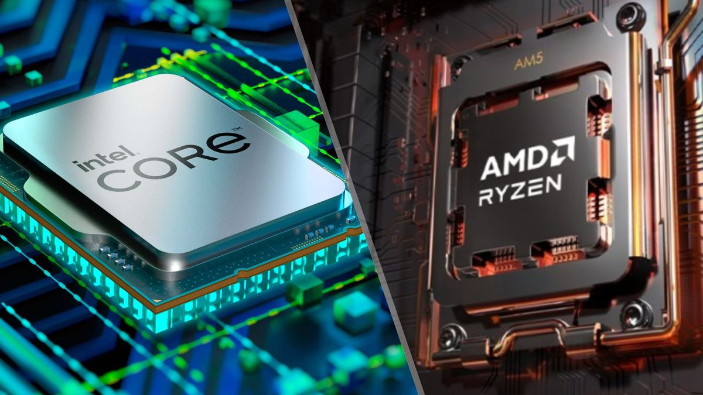
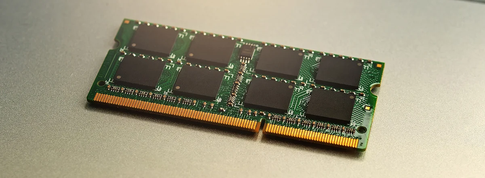
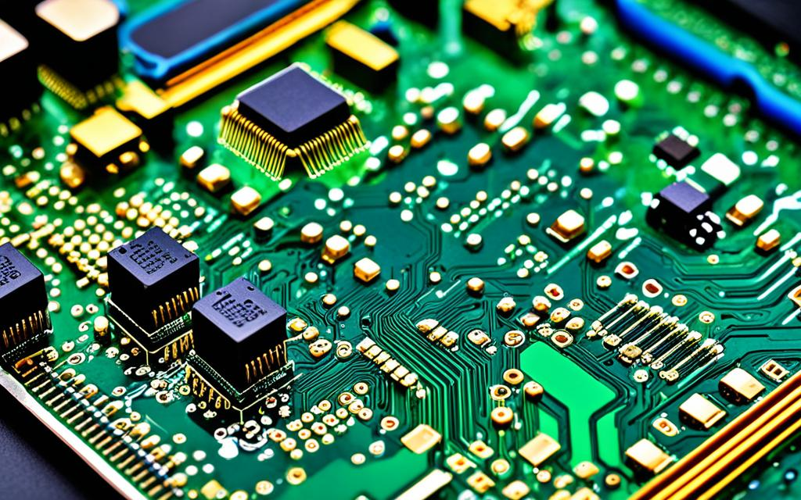
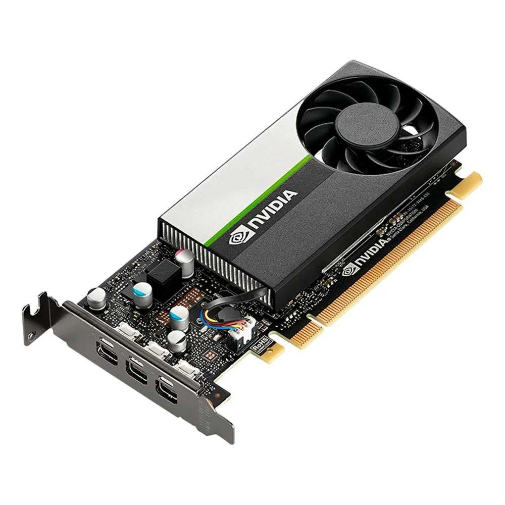
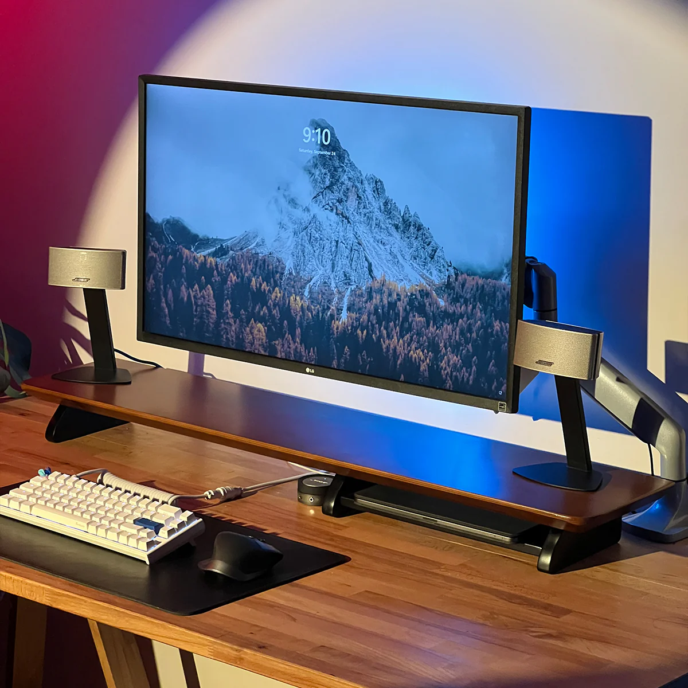
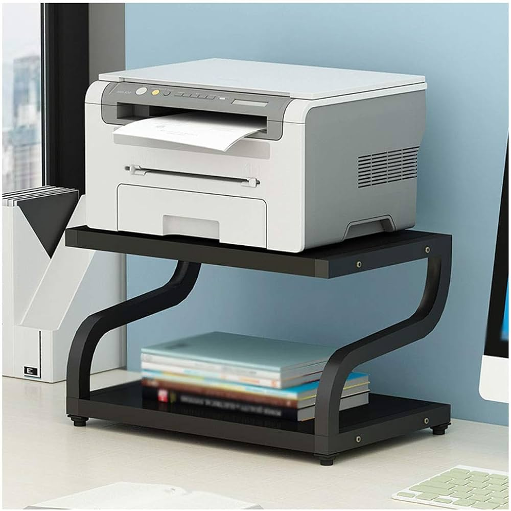
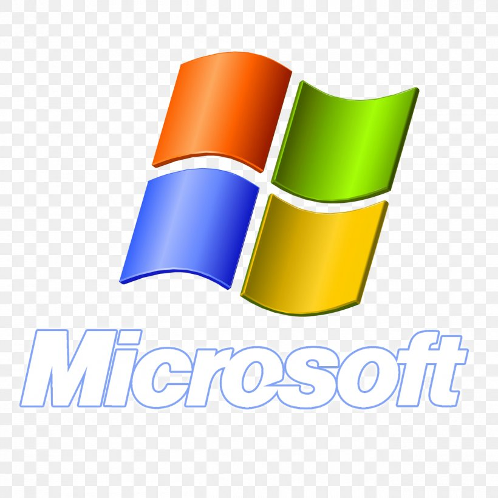
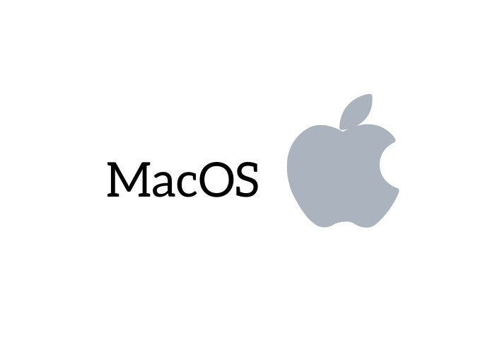

Introdução à Computação Moderna
Os computadores modernos seguem o modelo de arquitetura de Von Neumann, composto por três elementos principais: unidade de processamento, memória e dispositivos de entrada/saída. Esta estrutura permite a execução sequencial de instruções armazenadas, formando a base de todos os sistemas computacionais atuais.
Ler sobre a historia dos computadores !Componentes Internos
-
CPU (Unidade Central de Processamento)
O cérebro do computador, responsável por executar instruções a velocidades de até 5 GHz em processadores modernos. Composta por núcleos (até 64 em servidores) e cache (até 128MB), realiza bilhões de operações por segundo usando tecnologia de 5nm.
 -
Memória RAM
Memória volátil de acesso rápido (DDR4/DDR5) que armazena dados ativos. Atua como área de trabalho temporária com velocidades de até 6400 MT/s e latências de 14-18 ns em módulos de 8GB a 128GB.
 -
Placa Mãe
Placa de circuito impresso que interconecta todos componentes através de barramentos (PCIe 5.0, USB 3.2 Gen 2x2). Inclui chipset, slots de expansão e reguladores de voltagem para CPU/GPU.
 -
HD
HD, ou disco rígido, é um dispositivo que armazena dados digitais em computadores, notebooks, servidores e outros equipamentos

-
SSD
A principal diferença entre um SSD (unidade de estado sólido) e um HD (unidade de disco rígido) é a forma como armazenam os dados.As unidades de estado sólido (SSDs) têm várias vantagens em relação aos discos rígidos (HDDs), como velocidade, eficiência energética, durabilidade e menor geração de calor.

-
Fonte
A principal diferença entre um SSD (unidade de estado sólido) e um HD (unidade de disco rígido) é a forma como armazenam os dados.As unidades de estado sólido (SSDs) têm várias vantagens em relação aos discos rígidos (HDDs), como velocidade, eficiência energética, durabilidade e menor geração de calor.

-
Placa de Video
A principal diferença entre um SSD (unidade de estado sólido) e um HD (unidade de disco rígido) é a forma como armazenam os dados.As unidades de estado sólido (SSDs) têm várias vantagens em relação aos discos rígidos (HDDs), como velocidade, eficiência energética, durabilidade e menor geração de calor.

Componentes Externos
-
Teclado e Mouse
Interfaces primárias de entrada: teclados mecânicos com switches Cherry MX (50-80 milhões de cliques) e mouses ópticos com sensores de até 26.000 DPI e taxa de polling de 1000Hz.
-
Monitor
Dispositivos de saída visual com tecnologias IPS/VA/OLED, resoluções 4K-8K (3840×2160 a 7680×4320), taxas de atualização de 144-360Hz e HDR para contraste dinâmico.
 -
Impressora
Sistemas de saída física: jato de tinta (4800×1200 dpi) para cores vivas, laser (até 2400 dpi) para alta produtividade, e 3D (resolução 50-400 microns) usando FDM/SLA.

Sistemas Operacionais
-
Windows
Domina 75% do mercado desktop (versões 10/11) com suporte a DirectX 12 Ultimate, WSL2 para Linux e segurança baseada em Virtualization-Based Security (VBS).
Site Oficial  -
macOS
Sistema UNIX certificado (BSD base) otimizado para hardware Apple Silicon M1/M2, com Metal 3 API gráfica e suporte nativo a containers Docker via VirtioFS.
Site Oficial  -
Linux
Kernel open-source (5.15 LTS) com 500+ distribuições. Domina 90% do mercado cloud (Ubuntu, RHEL) e supercomputadores, usando sistemas de pacotes .deb/.rpm.
Site Oficial
-
Android/iOS
Android (Linux modificado) com 72% do mercado móvel e ART runtime. iOS (XNU kernel) otimizado para chips Apple com Metal API e SwiftUI para desenvolvimento.